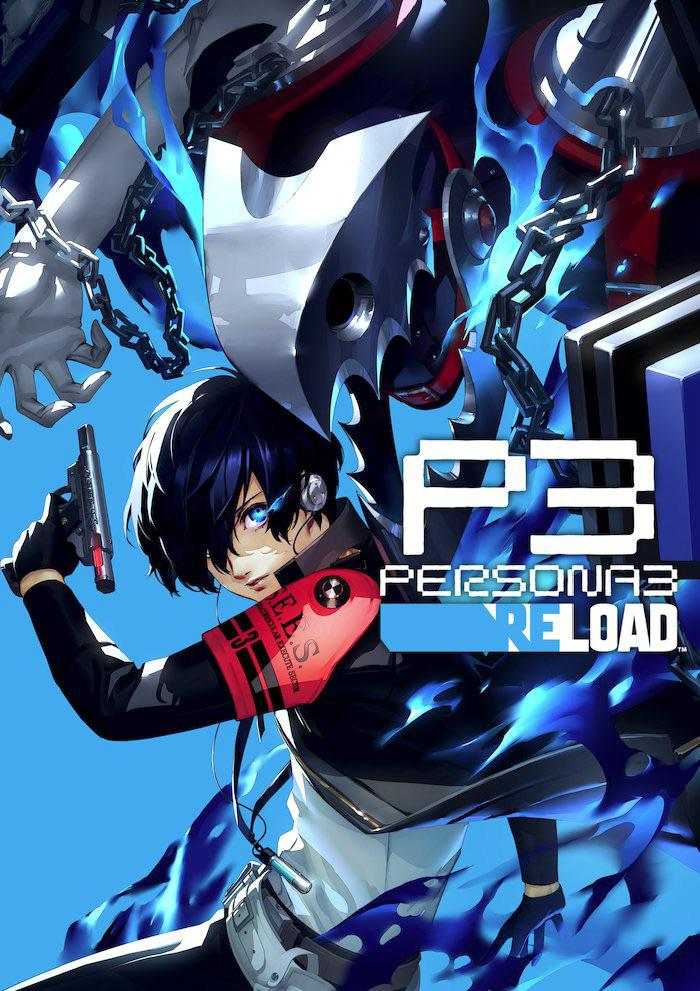

Vuelve a enfrentarte a la hora oscura
El juego clasico de PS2 regresa con una nueva version actualizada para nuevas generaciones
Mejoras de Calidad de Vida:
- Graficos Actualizados
- Cambios en el sistema de batallas (Ataques Theurgy)
- Nuevos tipos de ataque "Oscuridad" y "Luz" regresan de posteriores entregas
- Nuevos Eventos para la historia
- Y MAS!
Ideal para jugadores ya nuevos como experimentados
Esta nueva version incluye los suficientes cambios para valer la pena para la gente que ya jugo su version original, pero es lo suficientemente accesible para gente que se adentra por primera vez. No necesitas saber nada, con el tiempo lo descubriras. Eso si, recuerda que "el tiempo no espera a nadie".
DISPONIBLE YA EN:
